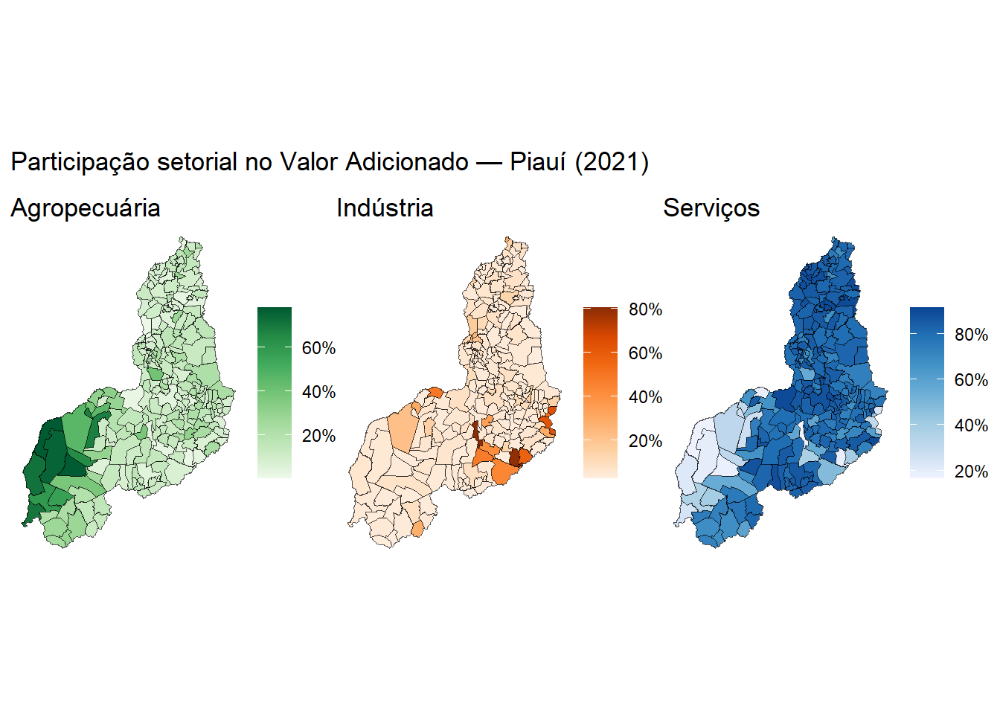

library(sidrar)
library(tidyverse)
library(geobr)
library(sf)
library(patchwork)Participação Setorial no Valor Adicionado — Piauí (2021)
Bibliotecas
Carregamento dos pacotes utilizados: sidrar para acesso à API do SIDRA/IBGE, tidyverse para manipulação de dados, geobr e sf para dados geoespaciais, e patchwork para composição de gráficos.
Coleta de dados
Extração dos dados da tabela 5938 (PIB dos Municípios) do SIDRA/IBGE para o estado do Piauí em 2021. São coletados o Valor Adicionado total (variável 498), da Agropecuária (513), da Indústria (517) e dos Serviços — este último composto pela soma de duas variáveis: Administração pública (525) e demais serviços (6575).
Em seguida, calcula-se a participação relativa de cada setor no Valor Adicionado total de cada município.
va <- get_sidra(
x = 5938,
variable = 498,
period = "2021",
geo = "City",
geo.filter = list("State" = 22)
) |>
select(Município, `Município (Código)`, Valor) |>
rename(va = Valor, code_muni = `Município (Código)`, MUN = Município) |>
mutate(code_muni = as.double(code_muni))
agro <- get_sidra(
x = 5938,
variable = 513,
period = "2021",
geo = "City",
geo.filter = list("State" = 22)
) |>
select(Município, `Município (Código)`, Valor) |>
rename(va_agro = Valor, code_muni = `Município (Código)`, MUN = Município) |>
mutate(code_muni = as.double(code_muni))
ind <- get_sidra(
x = 5938,
variable = 517,
period = "2021",
geo = "City",
geo.filter = list("State" = 22)
) |>
select(Município, `Município (Código)`, Valor) |>
rename(va_ind = Valor, code_muni = `Município (Código)`, MUN = Município) |>
mutate(code_muni = as.double(code_muni))
serv1 <- get_sidra(
x = 5938,
variable = 6575,
period = "2021",
geo = "City",
geo.filter = list("State" = 22)
) |>
select(Município, `Município (Código)`, Valor) |>
rename(va_serv1 = Valor, code_muni = `Município (Código)`, MUN = Município) |>
mutate(code_muni = as.double(code_muni))
serv2 <- get_sidra(
x = 5938,
variable = 525,
period = "2021",
geo = "City",
geo.filter = list("State" = 22)
) |>
select(Município, `Município (Código)`, Valor) |>
rename(va_serv2 = Valor, code_muni = `Município (Código)`, MUN = Município) |>
mutate(code_muni = as.double(code_muni))
serv <- inner_join(serv1, serv2, by = c("code_muni", "MUN")) |>
mutate(va_serv = va_serv1 + va_serv2) |>
select(code_muni, MUN, va_serv )
rm(serv1, serv2)
participacao <- va |>
inner_join(agro, by = c("code_muni", "MUN")) |>
inner_join(ind, c("code_muni", "MUN")) |>
inner_join(serv, c("code_muni", "MUN")) |>
mutate(
part_agro = va_agro / va,
part_ind = va_ind / va,
part_serv = va_serv / va
) |>
select(code_muni, MUN, part_agro, part_ind, part_serv)Mapa de participação setorial
O shapefile dos municípios do Piauí é obtido via geobr e unido aos dados de participação. Os três mapas coropléticos — Agropecuária, Indústria e Serviços — são compostos lado a lado com patchwork.
pi_muni <- read_municipality(code_muni = 22, year = 2020)
pi_map <- pi_muni |>
left_join(participacao, by = "code_muni")
p1 <- ggplot(pi_map, aes(fill = part_agro)) +
geom_sf() +
scale_fill_distiller(palette = "Greens", direction = 1, labels = scales::percent) +
labs(title = "Agropecuária", fill = NULL) +
theme_void()
p2 <- ggplot(pi_map, aes(fill = part_ind)) +
geom_sf() +
scale_fill_distiller(palette = "Oranges", direction = 1, labels = scales::percent) +
labs(title = "Indústria", fill = NULL) +
theme_void()
p3 <- ggplot(pi_map, aes(fill = part_serv)) +
geom_sf() +
scale_fill_distiller(palette = "Blues", direction = 1, labels = scales::percent) +
labs(title = "Serviços", fill = NULL) +
theme_void()
p1 + p2 + p3 +
plot_annotation(title = "Participação setorial no Valor Adicionado — Piauí (2021)")